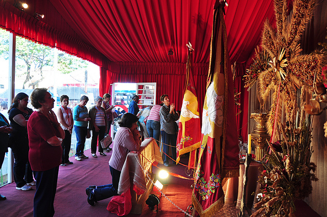
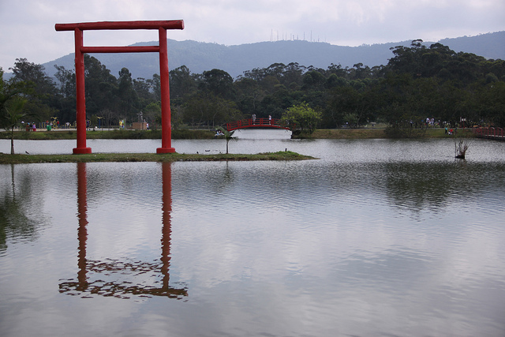
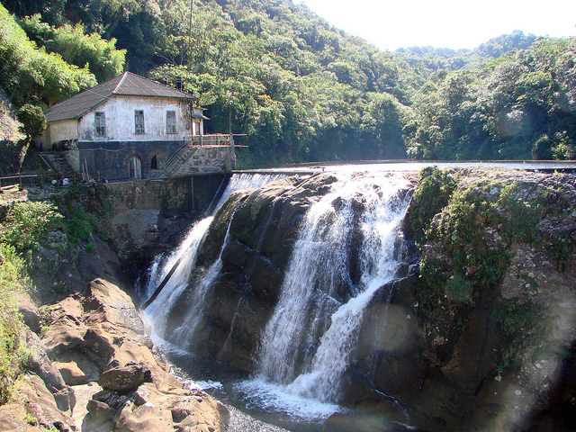

Antes da fundação do povoado de Mogi das Cruzes, o bandeirante Braz Cubas, no ano de 1560, havia se embrenhado pelas matas do território mogiano, às margens do Rio Anhembi, hoje Tietê, à procura de ouro. Gaspar Vaz abriu o primeiro caminho de acesso de São Paulo a Mogi, dando início ao povoado, que foi elevado à Vila em 17 de agosto de 1611, com o nome de Vila de Sant'Anna de Mogi Mirim. A oficialização ocorreu em 1º de setembro, dia em que se comemora o aniversário da cidade.
Mogi é uma alteração de Boigy que, por sua vez, vem de M'Boigy, o que significa 'Rio das Cobras', denominação que os índios davam a um trecho do Tietê. Quando a Vila foi criada em 1611, devido ao costume de adotar o nome do padroeiro, passou a ser denominada 'Sant'Anna de Mogy Mirim'.
Na língua indígena, Mirim quer dizer pequeno. Provavelmente, uma referência ao riacho Mogi Mirim. A linguagem popular tratou de acrescentar o termo 'cruzes' ao nome oficial da Vila. Era costume dos povoadores sinalizar com cruzes os marcos que indicavam os limites da Vila, de acordo com tese de Dom Duarte Leopoldo e Silva, confirmada pelo historiador e professor Jurandyr Ferraz de Campos.
Elevado à categoria de vila com a denominação de Santana de Mogi das Cruzes, por Provisão de 17-08-1611 ou 03-09-1611. Sede na antiga povoação de Boigi atual Mogi das Cruzes. Constituído do distrito dede. Sua instalação verificou-se no dia 01 de setembro de 1611. Pela Lei Provincial n.º 17, 28-02-1838, é criado o distrito de Itaquaquecetuba e anexado a vila de Santana de Mogi das Cruzes.
Fonte: https://cidades.ibge.gov.br/brasil/sp/mogi-das-cruzes
Mogi das Cruzes possui diversos pontos turísticos, locais de visitação turística com relevância cultural e/ou natural, com a possibilidade de contemplação, lugares incríveis para você visitar é o que não falta! Para te ajudar separamos 3 que você precisa conhecer.
Forte tradição na cidade, a clássica e original Festa do Divino! Com direito ao museu do Divino Espírito Santo e também uma enorme quermesse, recheada de comidas típicas, a festa é um sucesso total e atrai muita, mas muita gente mesmo. Há registros que ela ocorra pelo menos desde 1723, e o que mais impressiona são os números de alunos e voluntários que contribuem para o evento. Além disso, anualmente é feita a Entrada dos Palmitos, que deixa as ruas da cidade mais alegres e coloridas.
Operando desde 2008, é uma homenagem ao centenário da imigração japonesa para a região. O espaço é gigantesco e encantador : são 21,5 hectares que possuem lagos, pontes, praças, espaços culturais e muito mais. Uma das obras que mais impressiona é a réplica do navio Kasato Maru, que transportou, em 1908 o primeiro grupo de imigrantes.
Se você busca mais contato com a natureza, vai amar este parque. Aqui você é livre para escolher seu próprio roteiro, que pode incluir caminhada, canoagem, trilha e muito mais! Os pacotes também oferecem café da manhã, almoço, café da tarde e outras delícias. Passeio completo!
Fonte: http://www.qualviagem.com.br/mogi-das-cruzes/
Caio Cesar Machado da Cunha nasceu em Mogi das Cruzes em 1978, é atualmente vereador em segundo mandato, tendo sido eleito em 2016 o parlamentar mais votado da cidade naquele ano, com 5.788 votos. É autor do livro “Eles ocuparam a cidade: como engajar pessoas para transformar o Brasil”, que vem servindo como mecanismo para a propagação dessa metodologia para demais mandatos no Brasil.
Em Mogi das Cruzes, sua atuação vem ganhando destaque pelo firme posicionamento diante de pautas definitivas que norteiam o desenvolvimento da cidade: dos quase 50 projetos apresentados no biênio de 2017 a 2018, 25% deles são referentes a transparência e combate à corrupção. No último biênio também lutou contra o aumento do IPTU e pela tão aguardada regulamentação do Uber. E vem se consolidando cada vez mais como empreendedor social, área em que atua há mais de duas décadas.
Fonte: https://cidades.ibge.gov.br/brasil/sp/mogi-das-cruzes/panorama